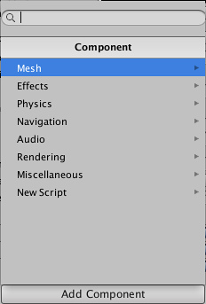
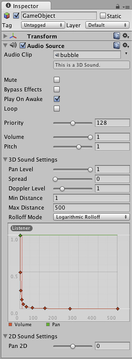

Using Components
Components are the nuts & bolts of objects and behaviors in a game. They are the functional pieces of every GameObject. If you don't yet understand the relationship between Components and GameObjects, read the GameObjects page before going any further.
A GameObject is a container for many different Components. By default, all GameObjects automatically have a Transform Component. This is because the Transform dictates where the GameObject is located, and how it is rotated and scaled. Without a Transform Component, the GameObject wouldn't have a location in the world. Try creating an empty GameObject now as an example. Click the menu item. Select the new GameObject, and look at the Inspector.

Even empty GameObjects have a Transform Component
Remember that you can always use the Inspector to see which Components are attached to the selected GameObject. As Components are added and removed, the Inspector will always show you which ones are currently attached. You will use the Inspector to change all the properties of any Component (including scripts)
Adding Components
You can add Components to the selected GameObject through the Components menu. We'll try this now by adding a Rigidbody to the empty GameObject we just created. Select it and choose from the menu. When you do, you will see the Rigidbody's properties appear in the Inspector. If you press Play while the empty GameObject is still selected, you might get a little surprise. Try it and notice how the Rigidbody has added functionality to the otherwise empty GameObject. (The y-component of the GameObject starts to decrease. This is because the physics engine in Unity is causing the GameObject to fall under gravity.)

An empty GameObject with a Rigidbody Component attached
Another option is to use the Component Browser, which can be activated with the button in the object's inspector.

The browser lets you navigate the components conveniently by category and also has a search box that you can use to locate components by name.
You can attach any number or combination of Components to a single GameObject. Some Components work best in combination with others. For example, the Rigidbody works with any Collider. The Rigidbody controls the Transform through the NVIDIA PhysX physics engine, and the Collider allows the Rigidbody to collide and interact with other Colliders.
If you want to know more about using a particular Component, you can read about any of them in the Component Reference. You can also access the reference page for a Component from Unity by clicking on the small ? on the Component's header in the Inspector.
Editing Components
One of the great aspects of Components is flexibility. When you attach a Component to a GameObject, there are different values or Properties in the Component that can be adjusted in the editor while building a game, or by scripts when running the game. There are two main types of Properties: Values and References.
Look at the image below. It is an empty GameObject with an Audio Source Component. All the values of the Audio Source in the Inspector are the default values.

This Component contains a single Reference property, and seven Value properties. Audio Clip is the Reference property. When this Audio Source begins playing, it will attempt to play the audio file that is referenced in the Audio Clip property. If no reference is made, an error will occur because there is no audio to be played. You must reference the file within the Inspector. This is as easy as dragging an audio file from the Project View onto the Reference Property or using the Object Selector.

Now a sound effect file is referenced in the Audio Clip property
Components can include references to any other type of Component, GameObjects, or Assets. You can read more about assigning references on the Assigning References page.
The remaining properties on the Audio Clip are all Value properties. These can be adjusted directly in the Inspector. The Value properties on the Audio Clip are all toggles, numeric values, drop-down fields, but value properties can also be text strings, colors, curves, and other types. You can read more about these and about editing value properties on the Editing Value Properties page.
Copying and pasting Component settings
The context menu for a Component has items for copying and pasting its settings.

The copied values can be pasted to an existing component using the menu item. Alternatively, you can use to create a new Component with those values.
Testing out Properties
While your game is in Play Mode, you are free to change properties in any GameObject's Inspector. For example, you might want to experiment with different heights of jumping. If you create a Jump Height property in a script, you can enter Play Mode, change the value, and press the jump button to see what happens. Then without exiting Play Mode you can change it again and see the results within seconds. When you exit Play Mode, your properties will revert to their pre-Play Mode values, so you don't lose any work. This workflow gives you incredible power to experiment, adjust, and refine your gameplay without investing a lot of time in iteration cycles. Try it out with any property in Play Mode. We think you'll be impressed.
Changing the order of Components
The order in which components are listed in the Inspector doesn't matter in most cases. However, there are some Components, such as Image Effects where the ordering is significant. The context menu has and commands to let you reorder Components as necessary.

Removing Components
If you want to remove a Component, option- or right-click on its header in the Inspector, and choose . Or you can left-click the options icon next to the ? on the Component header. All the property values will be lost and this cannot be undone, so be completely sure you want to remove the Component before you do.
Page last updated: 2012-09-11